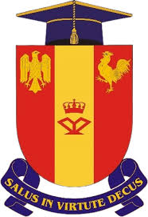
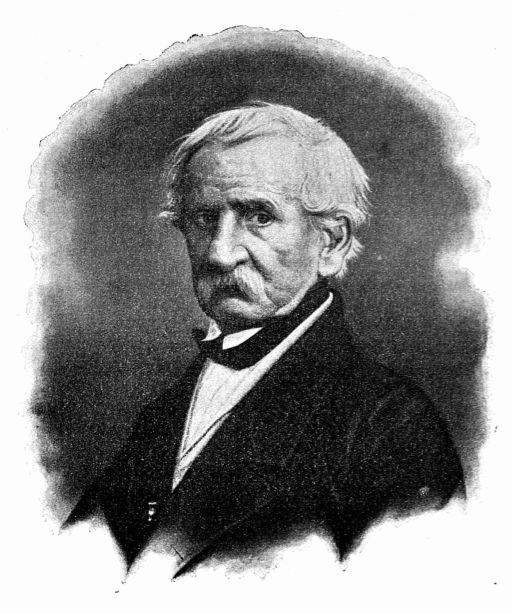
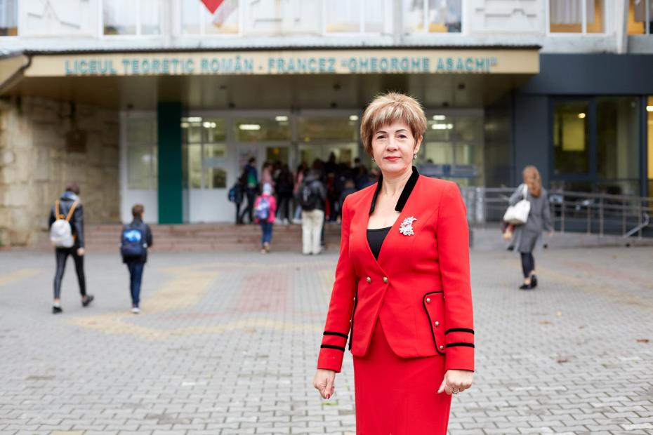

"La Asachi Inima Arde" |
|

|
Unitatea Scolara:
Instituția Publică Liceul Teoretic „Gheorghe Asachi”, municipiul Chișinău, Republica Moldova

|
Despre Liceul Nostru drag:
Instituţia Publică Liceul Teoretic „Gheorghe Asachi”continuă să fie instituţia cu un nume de rezonanţă în ţară prin două dimensiuni axiologice, atât din perspectiva istorică, fiind cea mai veche unitate de învăţământ din republică, cu tradiţii de instruire şi educaţie calitativă de peste 159 de ani,
cât şi din perspectiva contemporană prin realizarea unui demers educaţional inovativ şi interactiv marcat de spiritul ardent, cultivarea virtuţilor civice şi a verticalităţii morale.
Instituţia Publică Liceul Teoretic „Gheorghe Asachi” din mun. Chişinău este o instituţie preuniversitară cu studierea aprofundată a limbii franceze, având clase bilingve, a doua limbă străină fiind limba engleză. Instituţia este implicată activ în proiecte educaţionale de nivel naţional şi internaţional precum: Proiectul claselor bilingve sub egida MEC şi AUF.
|
Despre Liceul Nostru drag:
- Ordinul de Onoare a Republicii Moldova (2010)
- Decorația Regală „Crucea Casei Regale a României”( 26 martie 2018)
- Drapelul și stema (înregistrată la Comisia de Stat de Heraldică)
- Imnul liceului
- Festivalul Internațional „Mărțișorul Copiilor”
- Monografia „Istoria liceului”
- Filme documentare la TVM1 „Istorie și prezent”
- Spoturi, video (cu referire la serviciile prestate de liceu)
- Cartea de vizită a liceului la 150 de ani/ 155 de ani
- Anuarul didactic „Pro Asachi”
- Revista „Micii asachieni”
- Anuarul literar – lingvistic al elevilor „Brevete asachiene”
|
Director prezent:
Natalia Bulat

|
Directorii şi tutorii instituţiei
- Perioada modernă:
- 1864 – 1971 – director: L. Beliugova; Tutori: Familia nobililor Cristi, Rizo, Janette de Bois etc.
- 1871 – 1884 – director: M. Lazo; Tutori: Familia nobililor Krupenski, Zemstva Basarabiei etc.
- 1884 – 1906 – director: A. Lebedeva; Tutori: Familia Mazaraki – Deboliţev, Zemstva Basarabiei etc.
- 1906 – 1918 – director: V. Pavlovskaia; Tutori: Zemstva Basarabiei etc.
- Perioada interbelică:
- 1919 – 1940 – director: E. Botezat; Tutori: Fondul „ReginaMaria” etc.
- 1941 – 1943 – director: A. Negrescu; Tutori: Primăria oraşului Chişinău.
- 1943 – 1944 – director: E. Apostol.
- Perioada contemporană:
- 1944 – 1945 – director: L.Cupcea 1945‐1946 – director: E. Danova.
- 1946 – 1956 – director: M. Coca şi I.Sulla.
- 1956 – 1967 – director: M. Luca.
- 1967 – 1970 – director:A. Zgardan.
- 1970 – 1990 – director: E.Onu.
- 1990 – 2021 – director: B. Volosatîi.
- 2021-2024 – prezent – director Bulat Natalia
|

|
Sper ca v-am informat!!!
|
|
Adresa:
Bucuresti 69, Chisinau Republica Moldova
|
Tipul școlii:
Liceu cu clasele a I-a – XII-a.
|
Limba de predare:
Limba Romana / Limba Franceza
|
Profiluri:
Profil bilingv, clase cu studierea aprofundată a limbii franceze, profil real/ profil umanist.
|